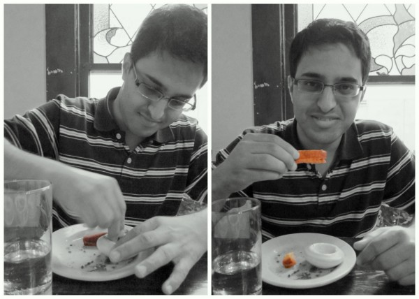

Three times. Aaron and I drove up and down Westheimer three times to look for this little bitty sign of a black-and-white pig and a one-syllable name: Feast. The restaurant with over 150 glittering reviews on Yelp and several listings of Best New Restaurants appears humbly a residential-looking house, which faces a brick box called the Crabell Building and is a stone’s throw away from Hollywood Food & Cigars if you’re coming from the east. Hollywood Food & Cigars, you say? Well that was part of Varun’s instruction for us, the last two man standing as the GPS is taking over the world. (Or one man and Mai, but that’s not the point). |
Varun had been here before on one of his food expeditions, and heaven knows why he did not veto my call when I suggested Feast for our rendezvous. I know why I suggested it: it has a daily changing menu that happened to have interesting wild games on the day I looked it up online. The day we came has more of a porky theme, presented in somewhat interesting combinations |
Aaron and Varun each decided on two appetizers for flexibility. If the listed price could initially throw off some shy college students, the good thing about Feast is that this is Texas we’re talking about: each appetizer is hefty enough to be a full course and the entree makes two meals. The content for us is heavy too, partly because we stayed macho and away from the salads, partly because the Scallop St. Jacques and the Potato and Leek Vichyssoise were loaded with enough cream and cheese they should just call them cheese bowls. |
Normally, scallop has a chew to it, but the scallops tonight melted in my mouth almost indistinguishably from the cream sauce coating them. That wouldn’t be a bad thing if you are into drinking your food, but once you take away the texture from the scallop, it’s nothing but a blob as flavorful as it is colorful. |
On the bright side, Feast makes stuff soft. My pork cheeks with red pepper and Rioja also melted in my mouth, its accompanying omelet-like rice tortitas (“pancakes”) were decent, although the seasoning reminded me too much of the veal mixiote I had in Puerto Vallarta. That veal was too salty, this pork was too bland, but both of them reflect a lacking attention to taste. |
The Spiced Pork and Dried Fruit Chili was also both too seasoned and unimpressively plain at the same time, although with rare highlights of raisins. Aaron’s choice of Pork Rillettes served on toasts was arguably the most harmonic piece of the night, and the only dish that was finished. |
Because Little Mom wouldn’t like me criticizing anything too much, I would rank Feast in the same category with Harry Potter and Las Vegas: stuff I don’t regret trying just so that I can tell anyone who would recommend them to me that I’ve tried them. (The night we went there, Feast was also crowded and noisy like Las Vegas.) Will I try Feast again? When I have dentures, maybe. Or when my heart can’t take any more salt. |

Or when I want to be cool like Varun: order two appetizers, try one spoon from each, and eat bread with butter for the rest of the hour.
Although we felt bad about asking the waitress to describe a couple of dessert items and not ordering any, we felt great about filling up on frozen yogurt and hot fudge minutes later at Aaron’s favorite: Swirll (right next to, and I think cuter than, The Chocolate Bar).
|
|
|
|
|
|
|
|
|